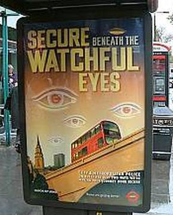

WolfesBlogArchives: July 2004
Friday, July 30, 2004
NICE PIECE FROM JESSE WALKER" on the legal issues and history around "This Land."
Posted by Claire @ 09:39 AM CST [Link]
AH YES, THAT "CONFIDENTIAL" CENSUS DATA AGAIN ...
WASHINGTON, DC - The Electronic Privacy Information Center (EPIC), a public interest organization in Washington DC, has obtained documents revealing that the Census Bureau provided the Department of Homeland Security statistical data on people who identified themselves on the 2000 census as being of Arab ancestry. The special tabulations were prepared specifically for the law enforcement agency. There is no indication that the Department of Homeland Security requested similar information about any other ethnic groups.This appears to be statistical data, not individually identifiable. But the reasons the DHS wanted it -- so Customs would know what languages to use in airport signage -- smell bogus. Most folk of Arab descent in the U.S. have been here all their lives -- or since their grandparents lives. They no more need special signage than do German-Americans, Italian-Americans, Japanese-Americans, or Irish-Americans.
Worth noting that most Arab-Americans are also Christians, not Muslims. And most Muslim-Americans are black, not Arab. But I'll bet the DHS-crats don't know that when they embarked on this fishing expedition. Why anybody would give personal info to some snoopy stranger from the Census Bureau ... well, it boggles the mind.
Posted by Claire @ 09:24 AM CST [Link]
FORGET THAT DUMB BLONDE BARBIE DOLL OF AN ANN COULTER (who has Barbie's brains, as well as Barbie's looks). Here's a much better notion of what a young, blonde columnist should be like.
Posted by Claire @ 08:36 AM CST [Link]
Thursday, July 29, 2004
EARTH TO DRUG TASK FORCE: That plant is called hibiscus, but it doesn't get you high.
Posted by Claire @ 06:59 PM CST [Link]
OKAY, WE WATCHED IT. PROBABLY A DOZEN TIMES. Now time to go help pay for it -- and maybe pay its legal bills, too. I'm talking about "This Land," the current parody over at JibJab. The two brothers who created it have had 25 million hits, made a whopping thousand bucks, and now the company that owns the copyright to (but of course, did not write) Woody Guthrie's "This Land" has sent them a cease and desist order.
I'm all for intellectual property, as I've loudly wailed. But the no-no order is a classic abuse of copyright. Parodies aren't piracy; they're commentary. Woody Guthrie has been dead for 37 years. Copyright protection on a song this old doesn't protect any creator's rights; it only stifles creativity -- creativity being exactly what IP protection is supposed to encourage. Besides, according to Wired's article on the situation, Woody Guthrie himself wrote this on one of his songbook pages:
This song is copyrighted in U.S., under Seal of Copyright #154085, for a period of 28 years, and anybody caught singin it without our permission, will be mighty good friends of ourn, cause we don't give a dern. Publish it. Write it. Sing it. Swing to it. Yodel it. We wrote it, that's all we wanted to do.Last week there was a pay-to-download option for "This Land." It's gone now (perhaps because JibJab wants to make it clear they're not "pirating" the song for profit). But there's an Amazon.com honor system option, so anybody with a credit card can make a micro-donation to the cause. And damn that thing is funny. Well worth paying for.
Posted by Claire @ 11:31 AM CST [Link]
I'VE BEEN DOING RADIO INTERVIEWS FOR THE NEW BOOK the past couple of weeks. Not many of them -- which suits my shy soul just fine, thanks; I'd rather do none at all. But the lack of interview requests bothers my publisher. They paid good money for ads in a radio and TV trade magazine. Last time, four or five years ago, they were flooded with calls from the same sort of ad in the same publication. Why aren't the stations calling?
More odd: about half the producers who've called represent mainstream rock & roll stations. They're looking for provocative fluff to fill breaks between commercials during their obligatory drive-time news-talk shows. Ten minutes of joking, joshing, mocking. A bit of "how to protect your privacy" advice. One quick chance to give the 800 number for book ordering. Then bang -- cut to commercial, goodbye. Not real interviews at all.
This wasn't the way it was last time around. What changed?
I just finished up an interview with a host who -- way back when -- had his own three-hour show. Now, his station's mega-corporate owner has granted him just half an hour to conduct interviews in the midst of a three-hour all-news block. He talked about that with me during commercial breaks, bitter but resigned. "You gotta do what you gotta do to survive." (A line that's become somewhat of a mantra to tired people in the freedom movement.)
And suddenly the light dawns.
Clear Channel. Infinity. And their several corporate cousins. They've gobbled up the little, independent stations. Between plain old corporate culture -- which has always been cowardly -- and post 9/11 fears of getting in trouble for excess free speech ... there just aren't so many places for Outlaw voices on the airwaves. Oh, yes, an Outlaw is fine fodder for silly filler interviews with the sort of host who (just yesterday) tried to get me into a conversation about how the Ds of 2004 were superior to the Rs of 2004 because the Heinz family makes the best ketchup. But the substantial shows are staying well within the bounds of respectability (bounds into which I don't fit). And many of the rowdy little shows of five or six years ago are simply gone with the fetid winds out of Washington, D.C. and New York.
Posted by Claire @ 08:31 AM CST [Link]
Wednesday, July 28, 2004
NOT CLAIMING THIS ARTICLE IS GOSPEL. It seems only one small step above rumor -- if that. And so much praise for a book analyzing GWB by a shrink who's never apparently even met him is a bit beyond reason.
Still, in the spirit of all those stories that break first in the National Enquirer then get confirmed later by the snooty east coast rags ... here's this provocative piece from CapitolHillBlue. "Bush using drugs to control depression, erratic behavior." It would explain a lot, if true.
Posted by Claire @ 09:58 PM CST [Link]
FABULOUS! COULDN'T HAPPEN TO A MORE DESERVING PRODUCT!
Low-cost RFID tags--many which are smaller than a nickel and cost less too--are already being added to packaging by retailers to keep track of inventory but could be abused by hackers and tech-savvy shoplifters, said Lukas Grunwald, a senior consultant with DN-Systems Enterprise Solutions GmbH. While the technology mostly threatens consumer privacy, the new technology could allow thieves to fool merchants by changing the identity of goods, he said."This is a huge risk for companies," Grunwald said during a discussion at the Black Hat Security Briefings here. "It opens a whole new area for shoplifting as well as chaos attacks." ...
When such tools become widely available, hackers and those with less pure motives could use a handheld device and the software to mark expensive goods as cheaper items and walk out through self checkout. Underage hackers could attempt to bypass age restrictions on alcoholic drinks and adult movies, and pranksters could create confusion by randomly swapping tags, requiring that a store do manual inventory.
Grunwald's software program, RFDump, makes rewriting RFIDs easy. While there are significant malicious uses of the program, consumers could also use it to protect themselves, he said.
Here's the article on CNET News.com.
And here's RFDump. (Note that of the three versions available, all three are for Linux and one of those three is also available for Windows. You also need a tag reader, but these are getting cheaper all the time.)
Ain't it wonderful -- the anarchic market at work again -- that potential solutions begin to pop up almost before the problem (RFID perpetual tagging) is upon us?
Posted by Claire @ 09:41 PM CST [Link]
GIVEN THE ABSENCE OF CONTACT INFO this "wanted cop" poster is probably just a dangerous joke. But an interesting sign of the times.
Note that the media assumes the flyers are from a group, just because the fine print on the poster says so -- a perfect illustration of the principle behind Item #160 (though #160 warns against having your fake "group" do anything paranoid government officials could interpret as a threat). This is one way the left has achieved so much -- by forming "groups" that consist of one or two folks with a knack for getting outsized attention.
News article found by Rick, our German friend who keeps a sharper eye on America than most Americans do.
Posted by Claire @ 09:43 AM CST [Link]
SHOULD THE NATION BE ON aubergine-chartreuse alert status? Or does the current crisis merit a raw sienna with warm pumpkin-y color alert, instead? Oh, the dilemma.
Posted by Claire @ 09:09 AM CST [Link]
Tuesday, July 27, 2004
WHOOOOHOOOOO!!!!!!! SpaceShipOne will go for the Ansari X Prize on September 29. After the difficulties in last month's flight, there was some doubt about when the ship would launch again. Since the X Prize funding is currently scheduled to be withdrawn if no one wins it this year, that could have been a Very Bad Thing. But it looks as if the first of the two required flights is a GO! YeeeHaw!!!!
Here's the Wikipedia entry on the Ansari X Prize.
(You see, Jac. I reprinted your SpaceShipOne story earlier today ... and news happened. Musta been magic.)
Posted by Claire @ 11:36 PM CST [Link]
PRISON/PROBATION STATS just keep going up, up, up. We must be a nation of baaaaaad people and getting worse. One in every 32 of us is a criminal.
WASHINGTON (AP) - A record 6.9 million adults were incarcerated or on probation or parole last year, nearly 131,000 more than in 2002, according to a Justice Department study.Put another way, about 3.2 percent of the adult U.S. population, or 1 in 32 adults, were incarcerated or on probation or parole at the end of last year.
A record 4.8 million adults were on probation or parole in 2003, about 73,000 more than the year before. About 70 percent of adults involved in federal, state or local corrections systems fall into this category. The states of California and Texas together accounted for about 1 million.
The number of adults on parole after serving a prison sentence rose by 3.1 percent from 2002 to 2003, to more than 774,500 people. That compares with an average annual rise of about 1.7 percent since 1995 for those on parole, a figure that has been increasing at a much slower rate than those in jails (4 percent a year), in prison (3.4 percent) and on probation (2.9 percent).
Posted by Claire @ 08:10 AM CST [Link]
REVISITING THE FLIGHT OF SPACESHIPONE. This doesn't qualify as news any more. But in a week that contains the usual barrage of Big Brotherism plus an overdose of Democrats, it helps to lift the heart once again. Young Jac and his sister Kathryn were there in the desert on the morning that free men escaped Earth for the first time & they wrote this report. [more]
Posted by Claire @ 07:52 AM CST [Link]
Monday, July 26, 2004
WAS THERE REALLY door-to-door gun confiscation in Oshkosh, Wisconsin? Along with warrantless searches of homes in the neighborhood where a cop was injured in a shooting?
Mainstream news reports don't confirm those details. But then, they wouldn't, would they? I doubt your typical reporter would find anything strange or wrong with the idea of cops busting randomly into houses, tossing out the residents, and removing all firearms.
Posted by Claire @ 02:14 PM CST [Link]
INJECTIONS TO PREVENT ADDICTION? Coming within two years, says this article. The shots are designed to take the high out of getting high. Wonder what other joys such injections could destroy? Might be sort of like living in the world of Equilibrium.
This might be useful if you're talking about giving the injections to drug abusers who want a new way to quit. But they're talking about "immunizing" little kids -- preventing addiction (and BTW, pleasure and BTW, free will) in the same way they now present measles.
Well, if Big Brother's still a few years away from oozing into your bloodstream, he's already in our technology in ways even smartfolk can't keep track of:
"There is a widening and yawning gap between the surveillance that is actually happening and people's understanding for the capacity for surveillance. People just have no clue, and I'm describing intelligent people," says Stephanie Perrin, president of Digital Discretion Inc. in Montreal."At the very broad level, we have a society that thinks it's democratic and absolutely has no concept of what the technology does."
Posted by Claire @ 09:13 AM CST [Link]
Sunday, July 25, 2004
ON THE EVE OF THE DEMS CONVENTION can you identify the location of each of these four photos? (Hint: Only one is of the Boston "free-speech zone.")
BTW, why do they still hold the conventions anymore, when there's nothing to be decided there? Is it 1) because the conventions are huge fundraisers with guaranteed global media coverage or 2) they don't dare stop play-acting their way through meaningless conventions because people might notice that the political process is a fraud?
I remember my mom -- a huge political junkie -- glued to our TV set for days though the conventions every four years. Back then there was something to be glued about. There was actual suspense. Actual wheeling and dealing. Actual doubt about who'd be the nominee. Geez, in those pre-PC days, there were even smoke-filled rooms. I was bored with the conventions of course. What kid wouldn't be? But on election night I loved being awakened by mom in the early morning hours to learn who won. And I remember the year she awoke all us kids after midnight so we could watch unfolding coverage of Bobby Kennedy's shooting and death. A couple of months earlier, I had shaken Bobby's hand at a rally. It was not quite the thrill of having seen brother John during his pre-election campaign (and to this day I'm amazed at how different JFK looked in person than in photos). But if you weren't there when the Kennedys were fresh and new, you can't quite grasp the excitement of them. (And you may be better off for acquiring cynicism earlier than the 60s generation did.)
The Chicago convention of 1968 was the first one I watched with serious interest -- more for what was going on in the streets than on the convention floor (although the creative chaos spilled onto the floor, too). Mayor Richard Daley's brutality toward the protestors was shocking and outrageous. But at least the protests happened. The protestors were seen and heard.
Now ... no need for police brutality. Just lock all the protestors behind barbed wire before they have a chance to express contrary opinions. Close down all the main streets. Conduct random searches of bus riders and train commuters. Have soldiers, instead of mere local cops, patroling the streets. (All of which says governments don't have Clue One as to how to stop the actual terrorists they claim to be after, but have many Clues as to how to run a police state and keep the populace properly cowed to live in one.) Progress. The brute Richard Daley has become the new role model in America and has been surpassed by his disciples.
Posted by Claire @ 05:57 PM CST [Link]
WHAT A LOVELY GOODBYE to the "assault weapons" ban. And a hello to the future. Nice job.
Now, let's just hope somebody remembered to drive a stake through that vampire's heart so it won't come back.
Posted by Claire @ 11:39 AM CST [Link]
EXPECT THIS SORT OF THING IN THE U.S. once we have compulsory mental-health screenings for the children.
And of course, we're already familiar with something like this, though not -- egads! -- in our private schools.
Found at Strike-the-Root.com.
Posted by Claire @ 09:15 AM CST [Link]
Saturday, July 24, 2004
NO, WAIT. THERE'S LOTS TO LAUGH ABOUT TODAY. Kim du Toit has this picture of the worst gun handling you'll ever see (if you're lucky). And ... drumroll ... it's by a cop.
Posted by Claire @ 08:21 AM CST [Link]
YOUR LAUGH FOR THE DAY, courtesy of Simon Jester:
Canada's $1-billion gun registry is being used by a U.S. project-management centre for senior corporate executives as a case study in incompetence and financial mismanagement.Baseline, a New York-based management centre that conducts case studies on information technology for business leaders, has published an analysis of the gun registry entitled: Canada Firearms: Armed Robbery.
The U.S. study examines how the gun registry developed from a simple $119-million system to track firearm ownership into a large and complex electronic database with a billion-dollar price tag.
"What was supposed to be a relatively modest information technology project ballooned into a massive undertaking. At last count, the program had amassed more than $1 billion in costs, and the system has become so cumbersome that an independent review board recommended that it be scrapped," Baseline's analysis said on its website.
The rest is here at the Windsor Star. Unfortunately, once you stop laughing you realize that 1) the gun registry is still there and 2) Baseline is using it to teach execs how to be more efficient at imposing Big Brother projects. Life goes on ...
Posted by Claire @ 08:13 AM CST [Link]
Friday, July 23, 2004
THE MEDIA CALLS THEM "DESIGNER DRUGS." The industry calls them research chemicals and rings them with careful warnings that they have not been tested or approved for use by human beings.
But the DEA has begun a crackdown, based on the fact that these chemicals produce "Ecstacy-like" or "LSD-like" experiences.
The anonymous friend who sent this news used a remailer and a nym, so fearful have we been forced to become even about discussing d-r-u-g-s. He wrote:
This email won't really concern most blog readers. But a loss of freedom for any of us is a loss of freedom for all of us, IMHO.For the past ~6 years numerous psychedelic drugs have existed in a kind of legal limbo. Not explicity outlawed, but illegal for human consumption. Many capitalists have been selling said chemicals over the internet. ... In the past 3 years the business flourished with a multitude of vendors each trying to undercut each other on price and provide better service...the free market at work. I thought it was crazy for American companies to sell the so-called "research chemicals" to other Americans, without of course having donated the requisite tens of thousands of dollars to Orrin Hatch to get "Officially Sanctioned" by the .Gov.
Well apparently I was right and they were wrong, unfortunatly. The DEA did a multi-state, multi-jurisdictional raid and shut down most of the vendors, which doubtlessly will scare the remaining ones out of business. These research chemicals aren't like the classic illicit drugs and likely won't ever reach their current popularity, assuming the government continues on its present trajectory. Unlike meth and ecstasy, the synthesis of the research chemicals, known by their abbreviations, "2C-T7, 4-OH-DIPT, AMT, 2C-I, etc." is rather tough, requiring along the lines of a modern research lab ... putting them out of reach of most "kitchen chemists." Unlike LSD, another tough to synthesis drug, the profitability of said drugs isn't high enough to make illicit mass production that attractive. And last but not least, the dose-variability of the research chemicals is so high that it is practically impossible to mass produce easy to sell "doses," for example 100 mg of ecstasy is considered a 'good dose' by most drug users but 25 mg of 2C-I, for example would be too high for about 30% of dosees and too low for another 30% of dosees.
Sadly it looks like the era of reasonable availibility of these compounds is over. Surely numerous drug users are going to return to the street to buy drugs of uncertain origin and purity, instead of high quality, very pure chemicals.
Posted by Claire @ 02:30 PM CST [Link]
WHOOHOO! The news is just vibrating in from the Higher Plane today. The first footage from Serenity, the upcoming movie based on Firefly will be screened for fans this weekend!
Posted by Claire @ 01:57 PM CST [Link]
HOPE FOR HACKING THE TYRANNY SYSTEM. This just in from a Higher Plane and from the fifth Hackers on Planet Earth conference:
Some even discussed plans to build a Hogwarts for Hackers -- a national security college that would teach young adults security skills like lock picking, encryption, rewriting software in cars, running pirate radio stations and building nanotech labs from things stashed in the closet or basement.... If there was any hope at HOPE 5, it was the idea, repeated in almost every workshop, that educated, curious citizens still do have the power to hack the system.
Otherwise there was gloom, gloom, gloom as corporate and government control of the Internet grows, as innocent hacks get re-defined as "terrorism," and even discussion of product-security flaws can be a crime. But the power to hack -- or otherwise monkeywrench -- may dim, but it never goes out completely.
Posted by Claire @ 01:53 PM CST [Link]
Thursday, July 22, 2004
A TEEN WITH THE "WRONG" NAME has airport security troubles. His guilty father ruminates (all too kindly, IMHO) about cause, effect, and CAPPS.
Most interesting is the suggestion this family got for how to turn their "terrorist" son into someone more acceptable. If they could do that, then what's to stop any real terrorist from evading the no-fly list name game in the same way?
(Thank you lamb_of_grace, whoever you may be.)
Posted by Claire @ 11:28 PM CST [Link]
AMAZING, the deference shown to a man caught stealing classified documents. Why do I imagine that Joe Blow (or for that matter, Wen Ho Lee) wouldn't have been treated quiiiiiite so gently?
But then, of course, the well-educated, white, prosperous Washington insider Sandy Berger just made a "mistake" which he no doubt "regrets." So that makes it all okay.
Posted by Claire @ 12:32 PM CST [Link]
JUST LISTENING TO THE 9/11 COMMISSION NEWS CONFERENCE. Although they're discussing some interesting and perhaps pertinent technical changes (e.g. better coordinated radio communications and radio equipment), it seems the main points are that we need better intelligence gathering, better intelligence sharing between agencies, and a single cabinet-level department in charge of national security intelligence.
Uh ... didn't they "solve" these problems with the USA-Patriot Act and the Department of Homeland Security a couple of years ago???
I feel as if somebody hit the "back" button on my Big Brother brand (TM) propaganda player.
Posted by Claire @ 11:21 AM CST [Link]
Wednesday, July 21, 2004
A PAIR OF FIELD REVIEWS. (Blogispondent Ian has the forum today ...)
by Ian McCollum
Since last writing, I've taken some excursions to both the shooting range and the hiking trails, and I'd like to report my experiences with a couple of products. First a military-issue sleeping bag/bivy sack combo, and second the Beretta 1201FP shotgun.
I recently returned from a one-night (it was supposed to be two, but we hiked faster than planned) backpacking trip into the mountains. I used the opportunity to test out a USGI "Modular Sleep System" (MSS) I have on loan from a friend. We spent the trip at elevations of between 10,000 and 12,000 feet, and rain was forcast - so I needed a bag both warm and waterproof - and this one seemed like it would fit the bill. [more]
Posted by Claire @ 08:41 AM CST [Link]
Tuesday, July 20, 2004
WHEN CLAIMS CIRCULATED that the Bush admin was soon to impose compulsory mental-health screenings on us all, I ignored them, pending confirmation. Really, I wasn't quite ready to believe anything so bizarre. But one state, Illinois, has already taken that leap: Illinois plans to implement compulsory mental-health screenings for all children from birth-to-18 and for all pregnant & post-partum mothers.
That is ... all those children and pregnant women the Benevolent State can catch. The article's not specific, but it sounds as if children's screenings might be administered by the government school system.
Pardon me, but however these screenings are conducted ... this whole plan is insane.
Not only does it violate rights, but to this day there is no reasonable standard for determining what constitutes a "mental illness" and what doesn't. Ah ... but we do know that behavior that goes against authority (like, for instance, refusing screenings) is a sure sign of "mental illness," don't we? Not to mention being one of those cranky bastards who clings to some outmoded morality or belief in limited government.
You don't love the state? You SICKO!
-----
Later: Kirsten, over at TCF, found the text of the actual legislation. Contrary to the original article, there doesn't appear to be anything in it about pregnant women being tested. The language is all very vague and the provisions all very up in the air at this point -- "recommend" this, "study" that, "set standards" for t'other. Potentially it's grimly ominous -- especially the part about "mental health" becoming part of state standards for learning. But it's not quite as first reported. And (as Alton_Speers noted), you gotta love those repeated references in the law to "children's mental health prevention."
Ah, but wait. NuclearDruid uncovers the draft plan which does call for screening pregnant women.
Sorry, this back-and-forthing is a hazard of letting Claire Files forum compatriots do my research. I offer the excuse (excuses being the in thing these days) that this is a blog, not an authoritative reference. It consists of whatever whacks me upside the brain at any given moment. I aim for accuracy and will gladly correct errors, but I admit rarely does the whack immediately inspire me to stop my day's work to dig for deep background. Bless the Internet and all those folk who contribute this piece or that to the whole picture. The truth shall out ... with my help or without it.
Posted by Claire @ 01:47 PM CST [Link]
IS IT CONCEIVABLE THAT IN THIS CONNECTED DAY a long-time freedom activist could be in jail for four months with scarcely a whisper about it on the Internet? Too weird. But that appears to be what's happened to Anthony Hargis, who has operated a private banking service and related businesses for decades in Southern California.
In March, Anthony refused to turn over customer records for an IRS investigation. His life is now "on hold" indefinitely in the Santa Ana Jail -- as long as he continues to refuse to produce the records. And yes, he's steadfastly refusing.
So far I have no outside confirmation of the facts. Only one online publication seems to have mentioned Anthony's arrest. A letter Anthony sent me from jail hints (though it doesn't say outright) that nobody's really even considered starting a PR and fundraising campaign until now; they may simply have been relying on lawyerly efforts. Again, that's only my impression at this point. I'm short on facts. I'm working on learning more and will let you know.
But in the meantime -- four months in jail without a single big, loud Net-alarm being raised! My god, it boggles the mind. Contrast this with Jeff "Hunter" Jordan's story and you really see the value of Net-connected activist friends. And of having a mutual-aid plan either already in place or ready-to-assemble at a moment's notice.
Posted by Claire @ 11:14 AM CST [Link]
Monday, July 19, 2004
KATHERINE ALBRECHT DEMOLISHES THE NOTION that getting an RFID chip implant will make anybody safer (as 160 newly chipped Mexican government officials apparently imagine). CASPIAN news release behind the "more" link.
What's really tragic is that after the first couple of bureaucrats, dipolomats, or rich folk have had their arms cut off, or simply had flesh gouged out without benefit of anesthetic so criminals can remove their chips, governments will make laws rendering it a new variety of crime (subject to Draconian punishment, of course) to "interfere with an RFID chip" or "mutilate with intent to steal identity." It'll never occur to them that getting chipped is just a bad idea.
BTW, speaking of Katherine, Advertising Age did a fine article on her victories over chip-mad corporations. Complete with very pretty picture. [more]
Posted by Claire @ 01:58 PM CST [Link]
Sunday, July 18, 2004
I REVIEW JAMES BOVARD'S NEW BOOK. It's hot. [more]
Posted by Claire @ 12:49 PM CST [Link]
Friday, July 16, 2004
GOOD WEEKEND READ. "Bastille Day and the French Revolution" by Dr. Miguel Faria. The French Revolution had so many twists, turns, double-crosses and factions that its hard for most of us to tell the Girondists from the Jacobins or to remember who killed Marat killed Danton killed Robespierre killed ... whoever, because they did one hell of a lot of killing and largely of guys they'd been snuggling under the covers with two weeks earlier. But Dr. Faria makes high theater out of those events while also showing why modern America makes a big mistake when it tries to graft "equality and fraternity" onto "liberty," as the French did.
Posted by Claire @ 09:38 PM CST [Link]
OBESITY IS NOW OFFICIALLY A DISEASE. And tragically, The Onion reports that scientists can't find the vaccine to cure it.
Posted by Claire @ 01:51 PM CST [Link]
THE PIZZA ORDER OF THE FUTURE. I've seen the script around the Net, but it's even better with sound and graphics, courtesy of the ACLU.
But of course we're much safer now that the fedgov is going to
renameeliminate CAPPS II. And thank heaven our tight-fisted, fiscally responsible Republican leaders spent only $100 million before realizing the program needed to bemoved to black-bag budget statusdumped.Posted by Claire @ 12:02 PM CST [Link]
Thursday, July 15, 2004
SPEAKING OF THE EXCELLENCE OF AIRPORT SECURITY ....
Posted by Claire @ 11:07 AM CST [Link]
INDIA IS ALL UP IN ARMS because its then-defense minister was twice strip-searched by U.S. airport thugs. Well, so what? If plumbers and professors and grannies are strip-searched, then why should a defense minister be exempt?
Not that I think anybody (except a real criminal suspect) should get the TSA treatment. But for cryin' out loud, who's more likely to have "ties" to terrorists? Some poor slob with a job or a defense minister who's got "ties" to all kinds of military groups, arms makers, plotters, and connivers? Really.
Its like with the drug war. The whole thing is absurd, cruel, stupid, and horrible. But if you're gonna throw Joe-Nobody Mohammed in prison for years for cocaine, then Noelle Bush ought to be in the next cellblock over.
Aren't these government mucky mucks always going on about how much they prize "democracy"? Well, what could possibly be more democratic? So strip 'em, boys & girls. And next time make it John Ashcroft.
We might finally get a little good sense and a lot less JBT-ism in governance around here if the fancy-pants crowd had to endure what the rest of us do.
Posted by Claire @ 07:49 AM CST [Link]
THE GLITTERING AND GLAMOROUS HARDYVILLE FILM FESTIVAL is now attracting thousands to our tiny mid-nowhere town. In Hardyville's firmly non-elitist tradition, you decide who wins the coveted and prestigious Hardies.
Posted by Claire @ 07:29 AM CST [Link]
Wednesday, July 14, 2004
GENERAL IDIOCIES AND NANNITUDE. I find myself with a whole bunch of browser windows open this afternoon. They display articles from various people and sources, articles that hit me with "Oh lord, I gotta blog that," but about which I'm speechless. So here you go:
- Getting a chip put in yourself to foil ruthless kidnappers could be, like, really, really dumb.
- No matter how they spin it, I don't think flashing TSA goons really arises out of mere "frustration" with airport screenings. Try "contempt."
- Something to think about the next time your doctor asks a question about your personal habits. She might be working for the DMV. Or worse.
- And finally, you'll be glad to know that your federal anti-terrorism tax dollars are being well-spent to protect you from ruthless vehicle-registration scofflaws.
Once again, a big pause for a sigh of relief as we all consider how much better off we are thanks to all this "security" and "public safety."
Posted by Claire @ 04:38 PM CST [Link]
JIM BOVARD COVERS OPERATION PIPE DREAMS, among the many other things in his new book The Bush Betrayal. You remember, that's the fed program in which Mr. Ashcroft and some 1,200+ minions (figuring terrorists needed a break) went after those deadly menaces to society: bongs and those who purvey them.
Operation Pipe Dreams' most famous catch was Tommy Chong, whose fanciful art-glass bongs even appeared in galleries. The G-Men swooped down on that 64-year-old artist/commedian in his bed -- helicopters, full-auto weapons, the usual JBT routine -- and eventually hauled him off to federal prison and fleeced him for something in the vicinity of $120,000, not to mention his business.
I'll pause while you breathe a sigh of relief about how much safer you feel now.
Anyway, after reading Jim's sharp-witted account of Operation Pipe Dreams, I Googled to see what was left of the bong business. Naively, I was expecting to find a lot of dead URLs and a furtive few sites offering "novelty water pipes for your tobacco-smoking (wink, nudge) pleasure." I mean, who would dare be selling B-O-N-G-S with John Ashcroft and his fiery sword personally bringing the wrath of some rather perverse god down on you?
HA! I Googled right in to sites like GrassCity.com. Hundreds of bongs, vaporizers, rolling papers. You name it. And a serious absence of euphemisms or furtiveness.
And then I continued Googling into Marijuana.com, where you can not only get advice on growing your own cannabis crop, but buy the seeds.
So maybe that's where the most recent crop of marijuana monkeywrenchers got their stuff.
Or how about potseed purveyor Ganja.com? It's a lovely site where they sell dozens and dozens of varieties of cannabis seeds. And mushroom spores, besides. That one was recommended by a friend who knows the founder. Ganja.com even has a seed wizard to help you choose whether you want cannabis sativa, cannabis indica, or some blend, foreign or domestic, budget-minded or pricey. And it's all delivered in a manner as civil and straightforward as any other thoughtful Web-based business.
I love it. You really can't keep a good market down.
Posted by Claire @ 12:21 PM CST [Link]
THINGS I'M GOING TO DO. REALLY.
- Update all my address book information at least quarterly and stash the info somewhere off my property.
- Check my tire pressure at every other gas fill-up, just like the experts keep telling me to.
- Empty all of last year's stored water, check the containers, and fill with fresh (and one teeny drop of unscented chlorine bleach).
- File the last three years' paperwork. Honest. One of these days.
- Practice cooking with those damn dried lentils.
- Haul that old SKS out of the closet and clean it at least once a year.
- Make sure to remember where -- or whether! -- I buried that other one. ("Now was that the third tree east of the big rock, or was it the third rock east of the big tree ... ?")
- Finally put baseboards in the cabin. As soon as all my other chores are done.
- Back up my data at least once a week and put the backups in some secure place off site.
- Pay as much attention to the dogs as the dogs think I should pay to them.
- Find some time to relax.
Posted by Claire @ 11:46 AM CST [Link]
Tuesday, July 13, 2004
MEXICO'S ATTORNEY GENERAL GETS A MICROCHIP IMPLANT so he can access a national crime database, among other reasons.
Posted by Claire @ 12:56 PM CST [Link]
LEW ROCKWELL KICKS OFF TODAY with articles by two of my favorite freedom writers. Joel Miller dares to rip into the D.A.R.E. program for its anti-family "fink on Mommy" policies. And J.D. Tuccille offers a short piece, "Break it Up, America!" in sensible support of secession.
Posted by Claire @ 08:51 AM CST [Link]
FIVE GREAT THINGS ABOUT YESTERDAY.
1. It was sunny, 80 degrees, and as fine a summer day as Nature ever created.
2. I sent my movie-script draft off at the local UPS drop. There's still at least one more round of work to come, but that'll be all polishing. The easy part.
3. My author's copies of The Freedom Outlaw's Handbook arrived, with their marvelous cartoon covers as bright as a fruit salad. (Naturally, the moment I opened a copy, I found a typo. Happens every time. But at least only one jumped off the page at me.) TFOH is just 101 Things expanded, updated, pummeled, and polished -- with the addition of a little extra Outlawry, of course. But kinda fun. I hope you enjoy it.
4. In the same trip to the P.O. I got -- what a bounty! -- a copy of Jim Bovard's newest, The Bush Betrayal. I was able to read a chapter real quick and discover that, if anything, Jim is even sharper than ever on both his research and his wit. I thought I knew all I needed to know about the TSA, for instance. Jim taught me I didn't know the half. On to other chapters today and a real review later this week. Buy this book!
5. I swapped for a bottom-of-the-line Alpine CD player for the truck. A sudden opportunity came up. I've wanted to put a CD player in for years, but the truck is so old and has so many miles I'd developed a superstitious dread that the moment I spent money to install musical fripperies, the engine would blow up. The solution? Don't spend any money on the frippery. Finally having a CD player will help me break my NPR habit (I say, having immediately programmed the first three FM presets on the radio to various regional NPR repeaters). NPR finally got to be a bit much yesterday when their lead story was on cheap AIDS drugs in Thailand, their second was about a sex-discrimination lawsuit, and they spent both "Morning Edition" and "All Things Considered" hyping the 100th anniversary of the birth of Pablo Neruda. Pablo Effing Neruda????? Like, real people need to spend the whole day celebrating the birthday of a commie &^%$ing love poet and politician? Somehow, NPR has just ceased being the very definition of relevance.
Anyway, now with the CD in the truck, I can catch up on some of the noisy music I've neglected, like Rush. Never could listen to rock & roll while sitting still. But while I am sitting still, I'm gonna read the rest of Jim's book, ASAP.
Posted by Claire @ 08:27 AM CST [Link]
Monday, July 12, 2004
"HUMILIATED, ANGRY, ASHAMED, BROWN." This photo essay reveals the new face of "homeland security" as creepily as anything I've ever seen, and details the new crime of photographing tourist attractions while brown. Note the obsession with ID, and the insistence on getting it from us at all cost. And the absolute fixation on wielding power rather than pursuing justice.
If you get a text-only version when you use the link above try here. Ian Spiers, the victim of this latest "homeland security" success, got so much traffic he had to pull the photos for the time being for fear of having his site go down. Two helpful people have put up mirror sites with photos intact.
Found at End the War on Freedom.
Posted by Claire @ 07:59 AM CST [Link]
IN CASE BODY SCANNERS AND SNIFFING POLICE DOGS WEREN'T GOOD ENOUGH FOR YOU, here's something "better." And here's a company that does it all, from biometrics to x-ray screening. Oh, the money to be made off "security"!
(Ick, Rick. But thanks.)
Posted by Claire @ 07:22 AM CST [Link]

UNSTRUCTURED REALITY, who has been the chief reporter of (anti)privacy developments over at The Claire Files forums has opened his own Yahoo group. In addition to discussion, it'll allow for more posting of .pdfs, .jpgs and other documents than is practical at TCF. He calls it a kind of information gulch.
Unstructured offers this login if you want to check things out before joining: username -- trialforliberty; password -- testing
Posted by Claire @ 07:11 AM CST [Link]
Sunday, July 11, 2004
EITHER THE ONION HAS DONE A PERFECT PARODY of the Telegraph or the Brits are going even loonier than we imagined:
A new animal welfare law that will offer slugs and snails the same protection as cats and dogs was condemned by gardeners yesterday.Legislation to be announced by the Government this week will give courts the power to impose fines of up to £20,000 and 12 months in jail on people found guilty of mistreating animals. ...
The legislation could lead to gardeners being fined for killing insects, worms, caterpillars, slugs and snails, if scientific evidence proves they have suffered pain and distress. Ministers say the law, which updates existing legislation, is needed to protect animals from abuse.
Next: manslaughter charges for stepping on ants.
Posted by Claire @ 10:35 AM CST [Link]
Friday, July 9, 2004
"MY MOTHER, THE TERRORIST." from the Practical Nomad, who continues to travel in spite of it all ...
Posted by Claire @ 12:19 PM CST [Link]
BILL ST CLAIR had a link to this enthusiastic review of the good old Mini-14. I've loved Minis since I first learned about them in Mel Tappan's classic Survival Guns.
As the review says, nobody makes much fuss over the Mini-14 any more. In fact, among people I hang out with it's become rather the thing to dis the poor, plain-Jane little rifle. After all, it's not an Ugly Black Gun. It wasn't even scary enough to get banned by Feinstein when she went after its workalike twin, the AR-15. How gauche!
Yeah. But it still costs about 1/3 what its Ugly Black cousins costs*, puts up with all kinds of abuse, and is super smooth to shoot. I'm not a big rifle shooter, myself (really not that much of a shooter at all, though I like guns). But the Mini-14 is fun. And it's a great gun for introducing a nervous newbie to shooting because it makes Serious Noise like a big rifle but has no more kick than any .22 plinker.
The only drawback I've found over the years is that the factory sights on the regular models are horrible. Takes forever to get a good sight picture if you don't practice a lot. The review linked above is for the scope-ready Ranch Model (which I wish I had). It solves the only problem.
I don't care what you say, Ian. The Mini is a sweet, sweet gun.
(BTW, Tappan's book also contains pictures of our old, now departed, friend and teacher Michael Harries.)
-----
LATER: Ian McCollum disputes my claim that a Mini can be had for 1/3 the cost of an EBR (Evil Black Rifle). I argue back. Feel free to chip in your $.02. It's on The Claire Files forums.
* Okay, 1/3 what some of its Ugly Black cousins cost. You win, guys.
Posted by Claire @ 10:31 AM CST [Link]
ANOTHER ATTEMPT TO KILL THE ODIOUS SECTION 215 of the odious Patriot Act collapsed yesterday in the House. R leadership held the vote open an extra three hours while they arm-twisted congresscritters into changing their votes. So the feds go on having the authority to check library and bookstore records unhindered by such 18th-century anachronisms as warrants or subpoenas.
Thank God Our Beloved Government is saving us from those awful terrorists who want to take our freedom, eh?
Moments like this I recall fondly Patty Neill's tongue-in-cheek rant "ID Tracking Number for All 'Public Servants.'" (And oh, Patty, how we still miss you.)
Yeah, it's on a slightly different topic. But the main point is still the same. Any congressrat who votes to make all of our activities transparent to anybody with a badge ought to be willing, first, to open up his or her records to us. You think "public servants" have a right to know what we buy, read, and support, where we travel, and who we associate with without a warrant -- just because some criminal somewhere might order a pizza or use a public library? Then clearly We the People have a right to know exactly the same about you.
Comon, Congressladies and Congressgentlemen. Let us see your bank records, your personal library, your credit card history, your home address and phone number, your mistress' address, the secret support payments you pay for that out-of-wedlock child your campaign volunteer had, the phone numbers of the lobbyists who call you and the records of the perks they buy you. Let's strip your privacy bare and see every last detail of your life, down to the brand of toilet paper you wipe your federal ass with.
And then, maybe, we'll believe you're sincere when you vote to open our records just because a "terrorist" might read the same books we do.
Posted by Claire @ 10:09 AM CST [Link]
Thursday, July 8, 2004
CAN VoIP SURVIVE CONGRESS? Declan McCullagh asks.
Text of the latest House bill to regulate Internet phone calling is here. Access charges. Universal service taxes. Bad enough we're still fighting the Spanish-American War with our regular (war taxed) telephone calls. Bad enough that 1934 regulations still apply to 21st-century phone systems. Now they want to impose the distant past on the Net. Of course.
Posted by Claire @ 11:46 AM CST [Link]
"I AGREE WITH ME!" says P.J. O'Rourke.
Last year, on a long car trip, I was listening to Rush Limbaugh shout. I usually agree with Rush Limbaugh; therefore I usually don't listen to him. I listen to NPR: "World to end—poor and minorities hardest hit." I like to argue with the radio. Of course, if I had kept listening to Limbaugh, whose OxyContin addiction was about to be revealed, I could have argued with him about drugs. I don't think drugs are bad. I used to be a hippie. I think drugs are fun. Now I'm a conservative. I think fun is bad. I would agree all the more with Limbaugh if, after he returned from rehab, he'd shouted (as most Americans ought to), "I'm sorry I had fun! I promise not to have any more!"Anyway, I couldn't get NPR on the car radio, so I was listening to Rush Limbaugh shout about Wesley Clark, who had just entered the Democratic presidential-primary race. Was Clark a stalking horse for Hillary Clinton?! Was Clark a DNC-sponsored Howard Dean spoiler?! "He's somebody's sock puppet!" Limbaugh bellowed. I agreed; but a thought began to form. Limbaugh wasn't shouting at Clark, who I doubt tunes in to AM talk radio the way I tune in to NPR. And "Shari Lewis and Lamb Chop!" was not a call calculated to lure Democratic voters to the Bush camp. Rush Limbaugh was shouting at me.
Me. I am a little to the right of ... Why is the Attila comparison used? Fifth-century Hunnish depredations on the Roman Empire were the work of an overpowerful executive pursuing a policy of economic redistribution in an atmosphere of permissive social mores. I am a little to the right of Rush Limbaugh. I'm so conservative that I approve of San Francisco City Hall marriages, adoption by same-sex couples, and New Hampshire's recently ordained Episcopal bishop. Gays want to get married, have children, and go to church. Next they'll be advocating school vouchers, boycotting HBO, and voting Republican.
Left and right, everybody's only shouting to the choir.
Posted by Claire @ 09:44 AM CST [Link]
Wednesday, July 7, 2004
"TORTURE AS DUE PROCESS." Jim Bovard shows how expediency, lawyers, and mission creep have expanded "government rights." The usual masterpiece of research from Jim. And as he says, the injustice is particularly relevant because the current post 9-11 shenanigans may look like a law-school picnic compared to what the fedgov could hit us with following some future terrorist attack.
Posted by Claire @ 02:12 PM CST [Link]
"I WRITE BADLY, THEREFORE I AM A WOULD-BE TERRORIST."
... Even so, the honcho gravely warned me that while I hadn't crossed the line, I had walked right up to it. And for that I would be on Homeland Security's watch list.That set me back. Why would I be put on a watch list even after Homeland Security had satisfied itself that I had no intention of blowing anything up, that my privacy had been violated by a nosy person who made an error and that I'd been the victim of a crazy misunderstanding? Why would I end up forever marked as a potentially dangerous character, subject to interrogations and body searches? Admittedly, some mornings, pre-shower, I do give Sheikh Mohammed a run for his money in the bed-head department; so if I ever venture to Starbucks this way, will I be straying across the line into never-to-be-heard-from-again-land?
Posted by Claire @ 01:42 PM CST [Link]
7-7-07. Robert Heinlein's birthday.
Good words about him by Spider Robinson, written while Heinlein was still alive.
Posted by Claire @ 09:51 AM CST [Link]
Tuesday, July 6, 2004
JULY 6, 1775: A CALL TO ARMS. The prose may lack the elegance of Jefferson at his best (he was only co-author of this piece; his work was "toned down" by John Dickinson). But the sentiments are every bit as stirring -- and as pertinent -- as the Declaration of Independence.
This is where the colonists stood less than one year before they finally broke the ties with Britain.
So many people wrote to say they'd read the Declaration of Independence to their families on Sunday! That's fantastic -- especially reading the Declaration shortly before going out and blowing things up. ;-) Jim Bovard was the only one who said he'd also read this document.
I skipped Independence Day. Tons of paltry reasons. Too busy working. The dogs don't share my joy at fireworks. And of course ... that naggy feeling that there's not so much to celebrate these days. But talking with with Jim reminded me of July Fourths past.
I used to crew on a municipal fireworks display. Strictly grunt work. Every year, 30 or 40 of us would turn up to load mortars. We'd pick up six-inch (diameter) shells and stand in ranks, holding the paper-wrapped shells under our clothes to prevent drifting embers from landing on them. On signal, a row of us would dash forward, slide the shells into metal tubes buried in the ground, then run like hell. Pick up another shell, wait with it tucked against our bodies, and do it all over again. Somebody from the real pyrotechnics crew would light the shells off.
There was always just enough potential danger to give a little frisson of pleasure. Burning embers did drift down around us, sometimes two or three inches across. There was always the possibility that a little spark left in "the hole" would ignite a shell before its time. But the risks were small; just enough to give us a feeling of doing something really, really cool.
And nobody's ever had a better "seat" at a fireworks show. When you're on the mortar crew, the concussions of exploding bombs nearly overhead thump you in the chest -- boom, boom, boom! -- with every detonation. Embers and ashes rain down on your shoulders. And oh boy, the delicious smell of gun powder! It clings to you. You take it home with you afterwards.
One year, something happened just at the beginning of the grand finale. We on the mortar crew were kept far away from that -- a huge series of powerful fireworks all wired together in close order. It was out on the end of the peninsula overlooking the lake where the show took place, far from any people. Seriously dangerous stuff. Anyway, something happened -- a fuse broke or burnt out -- shortly after the big display began. The finale fizzled. It went dark and silent.
The chief pyrotechnician instantly tapped his 18-year-old son, who went running out to the end of the peninusula, right into the middle of the big array, found the break, re-lit the fuse, and bolted as if his life depended on it (which, in fact, it may have). The finale reignited when the boy was just a few leaps away -- breathtaking bursts of thunder, even from where we stood. The kid was in mid-stride, fully off the ground, when the first explosion roared. In the sudden light, we saw his dark profile as he flew forward. Still completely upright and running, he was like the bionic man. He covered 10 or 15 feet in a single stride, or so it seemed. And then his forward foot his the ground again and on he pelted, not even missing a step.
Spectacular!
The next year I showed up to crew as usual and found barricades and policemen manning the entrance to the crew area. Only invited people were being allowed in. (Before that, anybody could just show up, volunteer, get on the mortar line; no names asked, no credentials required.) It was the end of my fireworks crew days. But it was an experience I'll never forget, for sure.
Posted by Claire @ 10:44 AM CST [Link]
Monday, July 5, 2004
ARMORCOAT. Makes glass as tough as armor, they say. And might also cut down on sound or other transmissions. What the well-dressed compound is wearing this year?
Bunzel recently demonstrated Armorcoat at Calibers, an indoor shooting range near Paseo del Norte and Interstate 25.Frazee, who is a very big man, has done his own testing. He took a baseball bat to a treated window. The bat bounced off. He took a window to a shooting range and "shot it with various guns," he said. "It held up really well."
"If you hit it with a baseball bat, you'd better make sure the bat doesn't bounce back and hit you in the head," Frazee said.
The 7- to 14-mil film is made of polyester, laminates and adhesives. It is packaged in rolls. It can be cut to the proper shape and applied to existing windows. It has an adhesive and sticks to the window, although it is tricky to apply properly, Bunzel said.
The installed cost is about $10 to $20 per square foot of glass, he said. A typical residential job takes about a day to complete.
But what if you need to break a window to get out in case of fire?
Posted by Claire @ 12:18 PM CST [Link]
Sunday, July 4, 2004
WENT TO SEE SPIDER-MAN 2 YESTERDAY. It's every bit as good as the original, though I don't think I'd agree with the dozens of reviewers who say it's even better. Either way, no point in quibbling. One or the other of the Spider-Man flicks is the best comic-book superhero story ever brought to the screen.
I got to thinking about something else, though. Before I went, I must have read 20 reviews. They were almost unanimous in their praise and nearly unanimous in what they revealed of the plot. Not one of them mentioned that the second half of the movie contains some significantly surprising surprises. And certainly none of them ever revealed the nature of those surprises.
Professional movie reviewers may give more detail than you really wish sometimes, but they never reveal key plot turns. Well, of course they don't. And have you noticed that although fan movie reviewers often will reveal key happenings, they faithfully preface their revelations with "spoiler" warnings to give you a chance to stay away? Only once in a long while, as in the case of the 1990s thriller The Crying Game, does a movie's big moment become so well known that audience members anticipate it before they ever hit the theater seats.
Yeah, all this seems obvious. I mention it, though, because it is obvious. No government ever had to write a law requiring reviewers not to reveal plots. Nobody ever had to be threatened with fines to get them to keep mum. It's just the right thing to do, so virtually everybody adheres to a completely unwritten and unstated "code" of honor.
How can this possibly be happening? You mean, people can be trusted to behave themselves without a law to force them to comply or punish them if they don't? No ... that can't be.
Hollywood must demand Congress pass a law mandating exactly how much of a movie any critic can reveal. It's needed. For the children. Or the health of senior citizens. Or corporate intellectual property rights. Or whatever.
Posted by Claire @ 02:36 PM CST [Link]
REMEMBER THAT STUDY A FEW WEEKS BACK THAT SAID DOGS ARE SO SMART? Even before that, border collies always came out on the top of every canine intelligence test. And why? Because they can learn so quickly to obey what humans want them to do! Obedience = brains? Oooooh, don't let the government get that idea.
Simon Jester sent this reflection on dogs that are really, really smart. Much smarter than any slave-all-day border collie.Turns out several of my dogs are geniuses.
Posted by Claire @ 02:16 PM CST [Link]
Friday, July 2, 2004
FREEDOM IS NOT A &^%$#@! SPECTATOR SPORT
All journalists are cowards. Hitchens knows it, I know it, everybody in this business knows it. If there were any justice at all, every last goddamn one of us would be lowered, head-first, into a wood-chipper. Over Arizona. Shoot a nice red mist over the whole state, make it arable for a year or two. A year's worth of fava beans and endive for the children of Bangladesh: I dare anyone in our business to say that that wouldn't represent a better use of our rotting bodies than the actual fruits of our labor. -- Journalist Matt TaibbiNow that, my friends, is a first-class rant. As I donned my asbestos spectacles yesterday and read Matt Taibbi's words, I was reminded that it's been a long time since I worked up a really good, raving, arm-waving, fire-breathing rant like that one.
I've been too nice lately. And that's not a good thing.
I feel I'll disappoint my readers. I worry I'll become just another plodding pundit - of which the Internet already has Saganian billions.
But why rant? One can only work up so much steam over the distant depredations of bureaucrats or the supreme stupidities of nine black-robed illiterates who can't read a document as simple and unambiguous as the Bill of Rights. Even when you're talking about a creature as ooze-drippingly malign as John "The Swamp Thing" Ashcroft or ... well, your typical journalist ... there's only so much arm-waving and screaming you can do before it all becomes redundant.
Or before it all becomes nothing but cheap entertainment for readers to digest with their morning coffee. And to s**t out afterwards like their morning donut.
[more]Posted by Claire @ 04:30 PM CST [Link]
WATCH THIS SPACE. I am working up a &^%$#! rant. I'm too busy to write it at just exactly this minute (partly because of one of the &^%$#! idiots I'm going to rant about). But it's coming. It's definitely coming ...
Posted by Claire @ 10:24 AM CST [Link]
BILL COSBY ONCE AGAIN TELLS IT LIKE IT IS.
"For me there is a time ... when we have to turn the mirror around," he said. "Because for me it is almost analgesic to talk about what the white man is doing against us. And it keeps a person frozen in their seat, it keeps you frozen in your hole you're sitting in."What's even more remarkable is that Jesse Jackson agreed with him.
Posted by Claire @ 09:45 AM CST [Link]
ACHTUNG! The Militant Libertarian, in partnership with your local, state, and federal governments, issues orders for the proper celebration of Independence Day.
(TML says these were found floating around the Internet. To Anonymous: Nice job.)
Posted by Claire @ 09:35 AM CST [Link]
MY FAVORITE U.S. PRESIDENT. No, not Jefferson. Somebody finally gives this poor, neglected guy the recognition he deserves.
Posted by Claire @ 09:27 AM CST [Link]
Thursday, July 1, 2004
MINCING NO WORDS, BUT MAKING MINCEMEAT OF POMPOUS CLAIMS, Matt Taibbi shreds the self-proclaimed "courage" of journalists. Wow. Linked from LewRockwell.com this morning.
Mr. Rockwell himself also takes a highly sharpened skewer to journalistic intellectuals whose airy opinions sanction useless death and utter destruction.
Posted by Claire @ 09:34 AM CST [Link]
POINTERS TO CHOOSING A HAPPY COUNTRY DOG. The new column is up at Backwoods Home. Nothing revolutionary this time. Just dogs.
And really excruciatingly tortuous bad puns.